WorldCast
Distributed Multiplayer World Models
- 1CUHK-Shenzhen
- 2SLAI
- 3Tsinghua SIGS
- 4Voyager Research, Didi Chuxing
- 5USTC
- †Corresponding author
Every tile is a view generated by WorldCast.
Independent controls. One shared world.
Ancient, held-out round, given player positions. Each view is generated from its own player’s controls.
Multiplayer
Real-time, long-horizon multiplayer.
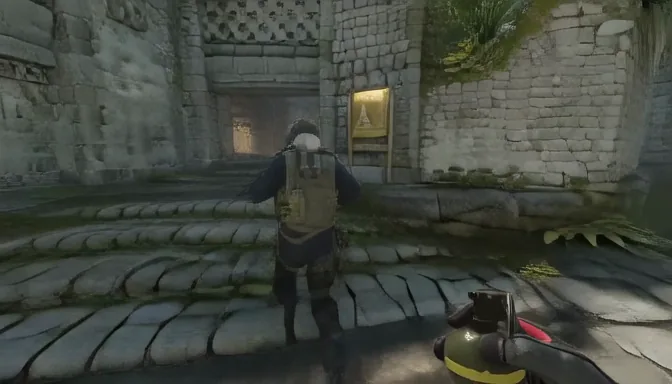
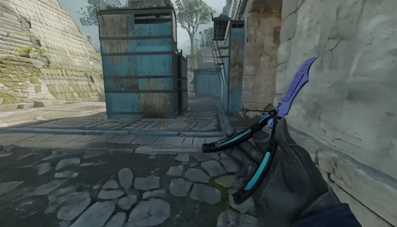
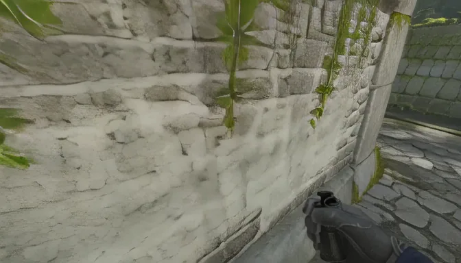
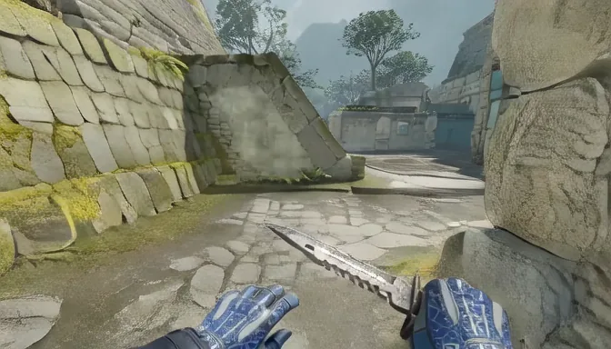
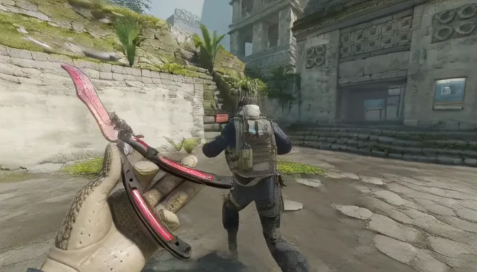
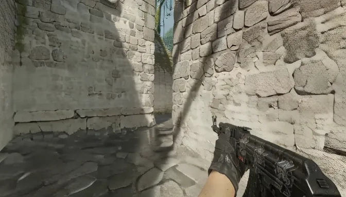
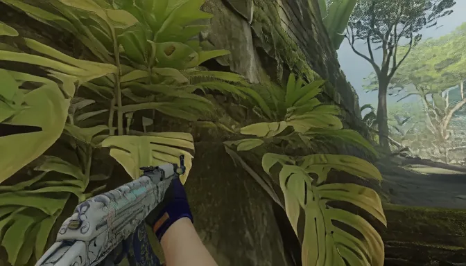
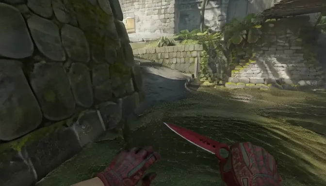
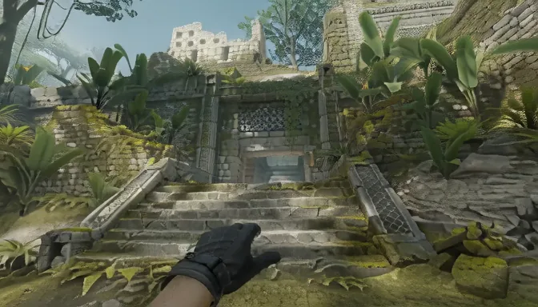
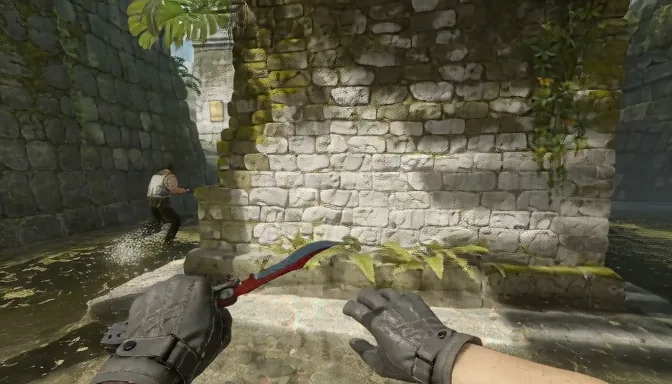
Ancient, held-out round, given player positions.
Player state
Each client renders the other players from the shared player state.
Shared player state
Mirage, held-out round, given player positions.
Scene state
Generated once. Reused by others.
Every generated block joins the shared scene state. Clients that arrive later reuse it, so the world keeps one consistent appearance across all views.
- 17.3 s
Player 1 sees this place.
- 24.5 s
Player 2, before the turn: on and off agree.
- 26.6 s
Player 2 turns. With scene state on, it renders the place Player 1 saw; off, a different one.
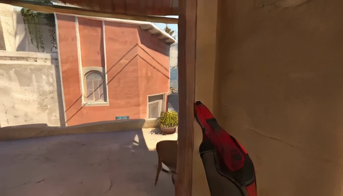
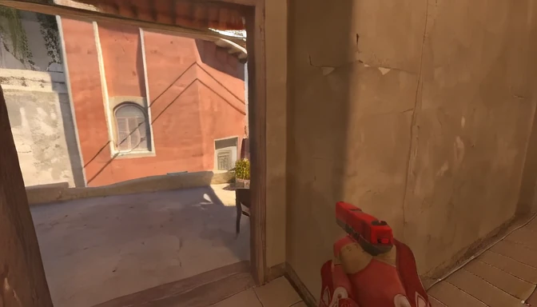
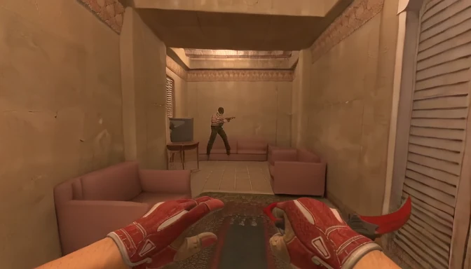
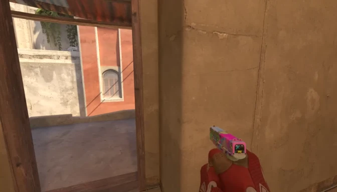
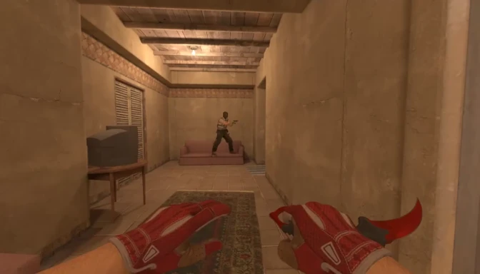
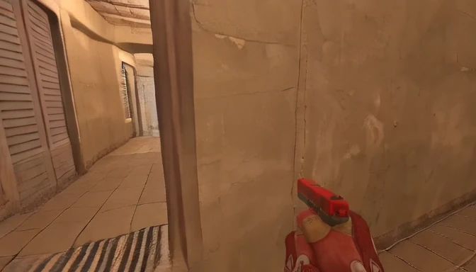
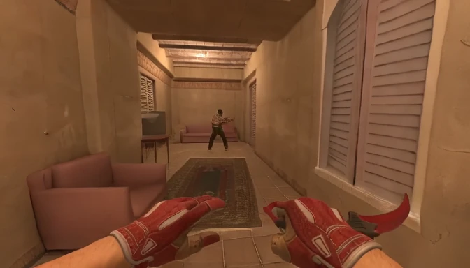
Mirage, held-out round, given player positions. Player 2’s three views share one camera.
Method
One client per player.
Each client reads the shared world state, generates its own view, and publishes updated state once per block. Activations, KV caches and intermediate features remain local.
![The architecture. (a) Coupled methods: one joint generator for all players, by joint attention or view concatenation; every denoising step is joint, and scaling means one longer joint sequence. (b) Distributed, WorldCast: a shared world holds the player state and the scene state; each client i, j, k reads it, generates its own view with a local generator G-theta from its action and own history, estimates its state with a state model, and publishes player state and a memory entry; over time, each block is extrapolated, corrected and synced once; a client can be added anywhere.](assets/media/method/fig2.svg)
![Scene state in one block. Left, the shared world state: the player state table and the scene state (memory bank with latent frames, cameras and depth). Reading, by client i before block n: extrapolation, camera projection into the player state field, 3D points, missing pixels, coverage and the retrieved memory entry. Right, client i: the causal video DiT (Pluecker ray and patch embeddings, DiT blocks, the state injector adding Conv0 of the field, block-causal self-attention over memory frames, recent context and target frames, action AdaLN, FFN) and the state model (depth head, conv and action encoders, causal transformer, motion and place heads, complementary filter), which update the memory entry and the own position, published for block n+1.](assets/media/method/fig3.svg)
Serving
One GPU per client.
16+FPS
per client 2 to 16 players
3.5Mb/s
received per client 16 players
Citation
@article{ye2026worldcast,
title = {WorldCast: Distributed Multiplayer World Models},
author = {Ye, Ziyang and Huang, Junchao and Zhang, Evelyn and Xie, Zhihao and Zhang, Ruicheng and Han, Boyao and Ban, Litao and Wang, Ziye and Hu, Xinting and Shi, Shaoshuai and Tian, Zhuotao and Jiang, Li},
journal = {arXiv preprint},
year = {2026}
}